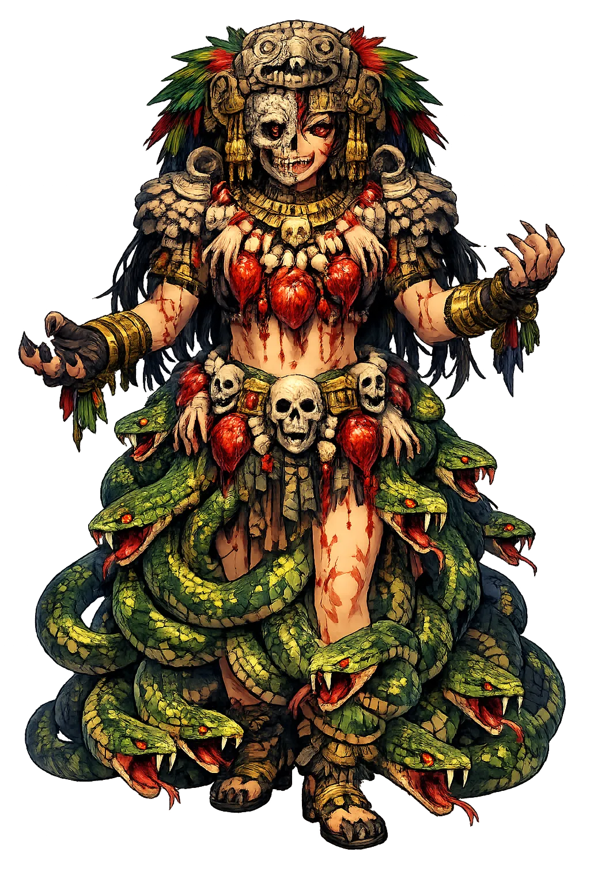

Stories of Cōātlīcue
Cōātlīcue's best-known myth is the birth of the sun god Huitzilopōchtli, a story of cosmic matricide in which one child is chosen and the others are cast into the sky. The narrative is preserved in the Florentine Codex and colonial Nahuatl histories; it fuses divine genealogy with political theology.
While Cōātlīcue was sweeping on the sacred mountain Coatepec — 'Serpent Mountain' — a ball of brilliant feathers drifted down from the sky, and she placed it in her bosom as she swept. By this sign she conceived, and when her pregnancy showed, her daughter Coyolxāuhqui, the Golden Bells, was shamed and enraged; she incited the Centzōn Huītznāhua, the Four Hundred Southerners, her brothers, to storm the mountain and kill their dishonoured mother. Cōātlīcue's unborn child answered for her. At the very moment of the assault, Huitzilopōchtli emerged fully armed from her womb, wielding the fire-serpent xiuhcoatl as his weapon; he struck off Coyolxāuhqui's head, shattered her body, and sent the Four Hundred tumbling across the heavens, where they became the stars. The account is told in Sahagún's Florentine Codex (Book III) and the Anales de Cuauhtitlan. The myth reads as pure cosmogony — the sun, born of earth, annihilates the moon and the stars at the moment of his rising — and as pure statecraft: the Mexica patron god defeats the older celestial powers at his birthplace.
The Mexica mapped the birth myth onto their capital with architectural precision. The Great Temple of Tenochtitlan was Coatepec: Huitzilopōchtli's shrine crowned its summit, and at the foot of his stairway lay the great carved disk of Coyolxāuhqui, eleven feet across, her dismembered limbs exactly where the myth said her brother threw them — at the base of the mountain, forever falling. Cōātlīcue's own shrine stood within the precinct, and the Tlaloc temple shared the pyramid's twin summit, binding rain, earth, and war into one axis. Excavations of the Templo Mayor, begun after the Coyolxāuhqui disk's chance discovery in 1978, revealed this choreography stage by stage, each rebuilding of the city re-stating the myth in stone. The foundation narrative thus did double duty: it explained the cosmos — sun over moon, order over rebellion — and it explained Tenochtitlan itself, whose every enemy could be cast in the role of the Four Hundred and cast down the same stairway.
In the broader theology, Cōātlīcue is more than the mother of one god: she is Tēteoh īnnān, 'Mother of the Gods,' the generative earth from which the luminous powers come. Her body is the ground itself; the moon that waxes above it and the stars that wheel over it are her transformed or defeated children, and the myth keeps returning to this economy — the sky is born of the earth, feeds on the earth, and falls back to the earth. Durán and the Florentine Codex describe her priesthood and her place in the festival round, where the earth-mother's rites of renewal required the same tribute as her myths: hearts and blood, returned to the soil so that it would give again. Sahagún's informants preserve her grief and her appetite in one image, for the earth that receives the dead corpse is also the earth that pushes up maize. The myth's logic is the Aztec logic of reciprocity itself: nothing rises from the ground that the ground does not first claim.
Coyolxāuhqui's fate is the myth's second half, and the Florentine Codex and the Anales de Cuauhtitlan keep its details with the precision of a ritual script. Beheaded at Coatepec, her body broken and tumbled down the mountain, the Golden Bells became the moon; her four hundred brothers became the stars of the southern sky; and the great stone disk found in 1978 shows the moment frozen — severed head, dislocated limbs, the belts and bells of her regalia scattered like the pieces of the lunar month itself. The reading is not accidental. Mesoamerican calendars counted the moon's phases as a cycle of wounding and reassembly, and the myth gives the phases a story: the moon is a body struck apart at sunrise, gathering itself through the month only to fall again. The myth also assigns the roles of cosmic politics: the moon and stars are the defeated older order, the pre-solar powers — which is why, in the deepest sense, Coyolxāuhqui lies at the foot of Huitzilopōchtli's temple, where every defeated enemy belongs.
Earth, Death, and the Serpent Skirt
Cōātlīcue is the terrible mother at the center of the Aztec cosmos, the earth goddess whose skirt is made of woven serpents and whose necklace of human hands and hearts proclaims her appetite. She is not a gentle nurturer: she is the devouring ground that receives the dead and the fertile soil that demands blood to bear again. In her image, creation and destruction wear the same face.
She embodies the fertile and unstable earth; her womb births the stars, the moon, and the sun itself.
Called Tēteoh īnnān, she is the progenitor of Huitzilopōchtli, Coyolxāuhqui, and the Centzōn Huītznāhua.
The earth receives corpses and transforms them; her gaping maw and clawed feet mark her as death-in-life.
Blood and hearts are the offerings that sustain her; without them the sun cannot rise and the crops cannot grow.
From the original script to the living URL
Cōātlīcue
The name survives only in scholarly transliteration. Cōātlīcue is the standard Nahuatl romanisation, documented in academic sources — “She of the serpent skirt”. Its macron-length vowels preserve distinctions lost in plain ASCII.
No indigenous writing system is securely attested for individual nahuatl names. The form shown is a modern scholarly transliteration.
coatlicue
Reduced to plain coatlicue, the name loses everything that made it specific: macron-length vowels. What remains is an ASCII string that machines can parse but that no longer speaks with its original voice.
Cōātlīcue
The Unicode restoration recovers what ASCII flattened. Cōātlīcue restores macron-length vowels, returning the name to its original written dignity. The domain encodes to Punycode, but the browser displays the truth.
Cōātlīcue.com → xn--ctlcue-3za25a6j.com
The non-ASCII characters in Cōātlīcue are encoded while the ASCII remains visible. To the DNS, it is Punycode. To humanity, it is Cōātlīcue.
Owned, ideal, and ASCII forms of Cōātlīcue
Cōātlīcue
The live temple domain — cōātlīcue.com.
coatlicue
The plain ASCII fallback — what DNS and legacy systems see.
How Cōātlīcue was spoken
How Cōātlīcue is preserved in writing
No indigenous writing system is securely attested for individual nahuatl names. The form shown is a modern scholarly transliteration.
Contribute scholarly provenance →Cōātlīcue asks us to look at the earth without sentimentality. She is not the passive 'mother nature' of romantic painting; she is the soil that receives corpses, the mountain that gives birth to warriors, the skirt of snakes that moves even when she stands still. To approach her is to accept that fertility and death are not opposites but phases of a single metabolism.
Enter Extended Lore